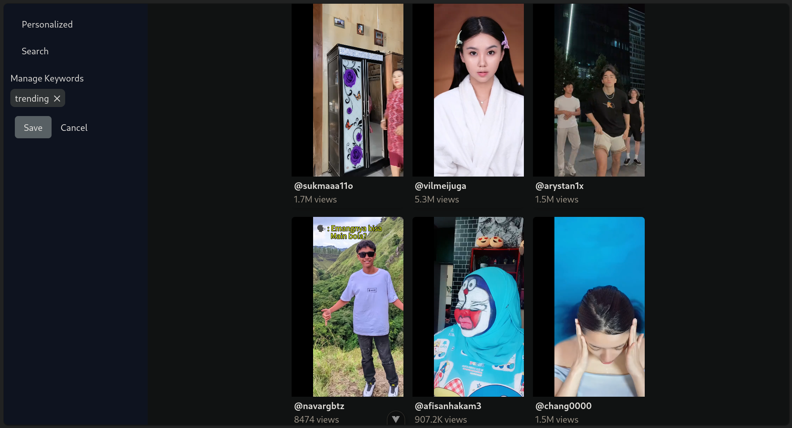
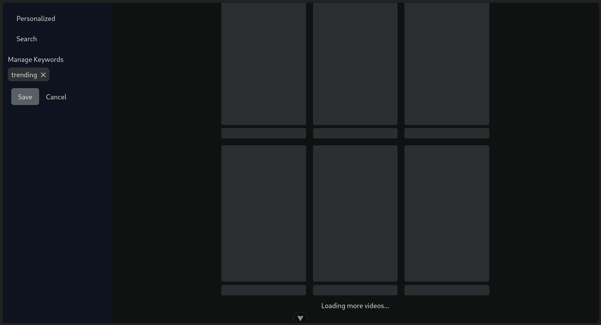
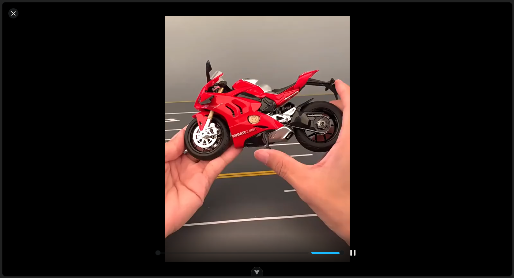
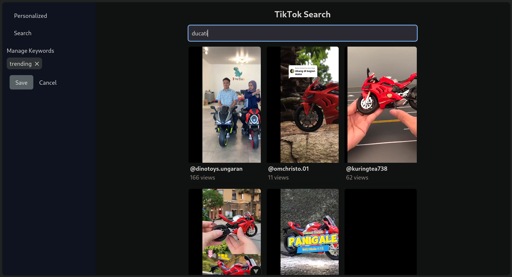
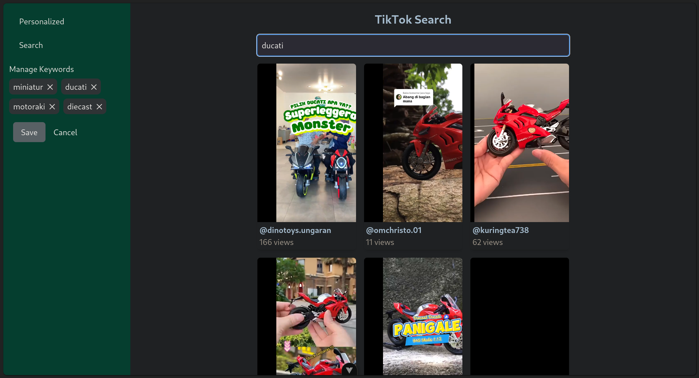
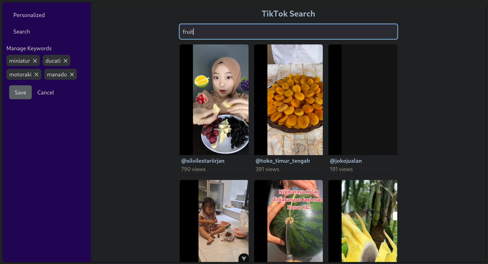

A full-stack application for scraping TikTok videos, built using Go for the backend and Vue.js for the frontend.
| Home Page (Personalized) |
|---|
|  |
| Infinite Scrolling |
|---|
|  |
| Fullscreen Video |
|---|
|  |
| Default (Search Page) |
|---|
|  |
| Senti |
|---|
|  |
| CV |
|---|
|  |
git clone https://github.com/fadilmuh22/vuegouette.git
cd vuegouettedocker-compose builddocker-compose upgit clone https://github.com/fadilmuh22/vuegouette.git
cd vuegouetteair -c .air.tomlcd web
npm install
npm run devThe application uses the Chromedp library to scrape TikTok videos. Chromedp enables programmatic control of headless Chrome, allowing us to navigate web pages and extract information. The scraping process includes: - Initializing a Chromedp context for each user, ensuring that we maintain state across requests. - Navigating to the TikTok search page based on user-defined keywords. - Extracting video data from the page, including video URLs, user avatars, video titles, and tags.
To maintain state for each user and keyword combination, the application employs a concurrency-safe map (userContexts) that associates user IDs with their respective Chromedp contexts. Each context has an expiration policy to free up resources after a specified period of inactivity. This allows multiple users to scrape TikTok independently without interference.
The application provides personalized video recommendations based on user-defined keywords. Users will automaticall update a new keyword when they watch a video add it to their profile, which the application uses to scrape TikTok videos. The application then displays videos that match the user’s keywords, allowing users to discover content that aligns with their interests.
The Tailwind CSS configuration supports multiple themes through a custom color map. The colorsMap object defines color palettes for different themes (e.g., default, senti, and cv). You can switch themes by changing the colors used in your components based on the desired theme. To use a different theme, simply update the theme property in your component or apply classes according to your color configuration in tailwind.config.js.
The application uses the Plyr Vue media player to display TikTok videos. Plyr Vue provides a simple, customizable HTML5 media player that supports full-screen mode. When clicking a video thumbnail, the application opens the video in full-screen mode, allowing users to watch videos in a larger format. The user can utilizes the shortcuts for navigating such as the arrow keys and page up & down to move between videos and escape for exiting fullscreen mode. Mobile users can swipe up or down to navigate between videos.
This project is licensed under the MIT License - see the LICENSE file for details.